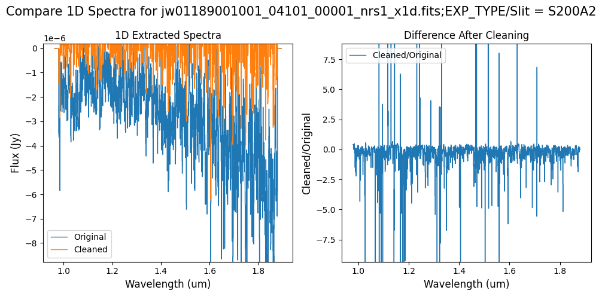
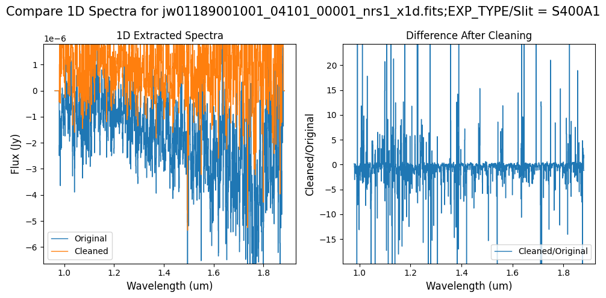
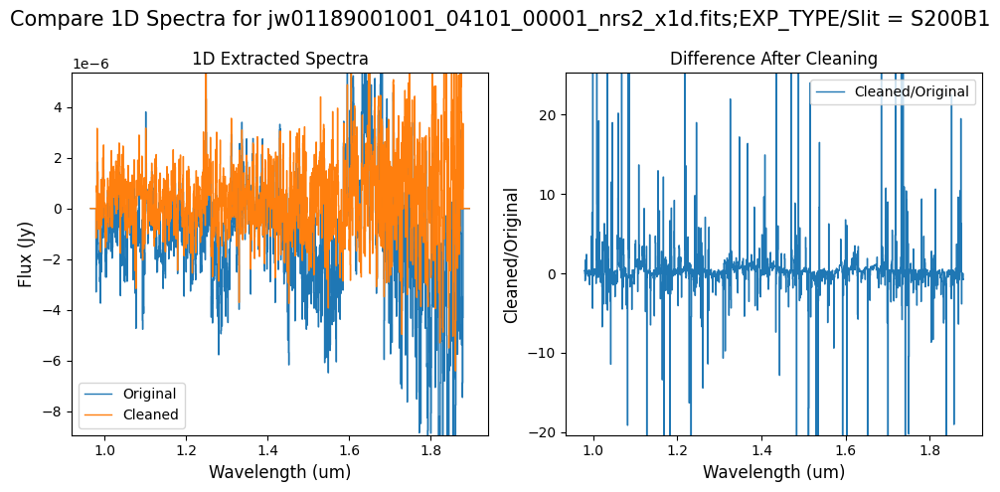
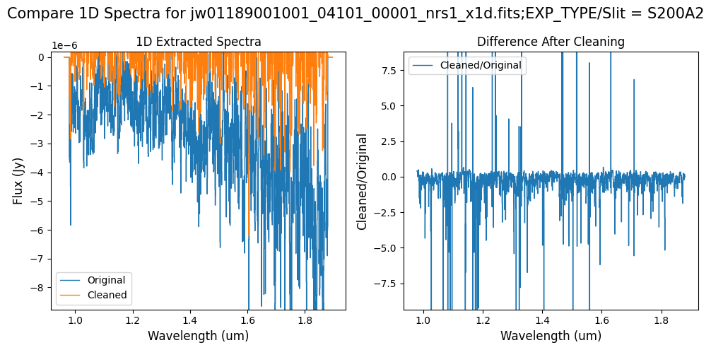
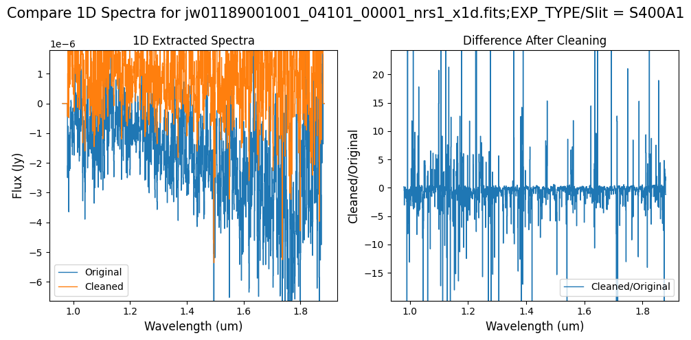
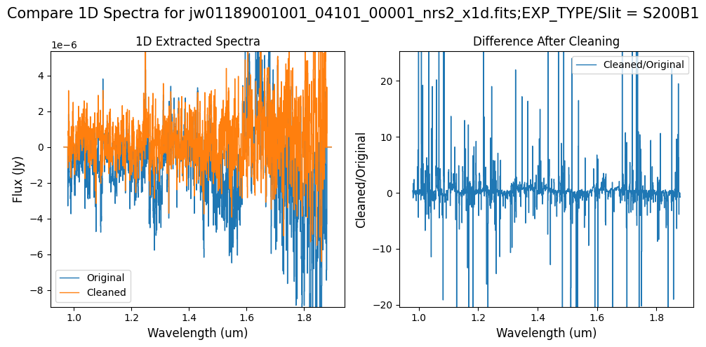

Cleaning Residual 1/f Noise in NIRSpec FS Products with NSClean#
Notebook Goal#
The goal of this notebook is to generate cleaned FS (_rate.fits) files by removing residual 1/f noise. These cleaned files will be used as input for the level 3 (Spec3Pipeline) pipeline.
Table of Contents#
Introduction
Import Library
Download the Data
Running
Spec2Pipelinewithout NSClean (Original Data)
Clean up 1/f Noise with NSClean (Default Pipeline Mask)
5.1 Verify the Mask (Default Pipeline Mask)
5.2 Comparing Original vs. Cleaned Data (Default Pipeline Mask)
Clean up 1/f Noise with NSClean (Alternate Mask)
6.1 Verify the Mask (Alternate Mask)
6.2 Comparing Original vs. Cleaned Data (Alternate Mask)
Clean up 1/f Noise with NSClean (Hand-Modified Mask)
7.1 Verify the Mask (Hand-Modified Mask)
7.2 Comparing Original vs. Cleaned Data (Hand-Modified Mask)
Conclusion
About the Notebook
1. Introduction #
The JWST NIRSpec instrument has a number of features and characteristics that observers should be aware of when planning observations and interpreting data. One notable feature seen in NIRSpec pipeline products is negative and/or surplus flux in the extracted 1-D spectrum, typically with an irregular wavelength-dependent undulation. The cause of this artifact is correlated noise, known as 1/f noise, from low-level detector thermal instabilities, seen as vertical banding in 2-D count rate images, particularly in exposures of the NRS2 detector. While the IRS2 readout mode reduces this effect, it is not completely eliminated.
To address this issue, the JWST Science Calibration Pipeline has integrated an external package developed by Bernard Rauscher, known as NSClean, within the Spec2Pipeline under NSCleanStep. This algorithm uses dark areas of the detector to fit a background model to the data in Fourier space. It requires an input mask to identify all dark areas of the detector. The more thorough and complete this mask is, the better the background fit.
In this notebook, we will use the NSClean algorithm integrated into the pipeline, utilizing a mask generated on-the-fly with default parameters to remove 1/f noise. In some cases, this mask may not be complete enough/too restrictive for the best possible noise removal. To address this, we demonstrate how one can manually modify the default mask, as well as how to create an alternative mask by adjusting the NSCleanStep parameters. If needed, see the NSClean documentation for some suggestions on manually creating a custom mask.
This notebook provides examples from two GTO observations: a fixed slit observation of F dwarf GSC 03162-00665 from program 2757 and an observation of the brown dwarf J03480772-6022270 from program 1189.
2. Import Library #
# ---------- Set CRDS environment variables ----------
import os
import jwst
os.environ['CRDS_CONTEXT'] = 'jwst_1210.pmap'
os.environ['CRDS_PATH'] = os.environ['HOME']+'/crds_cache'
os.environ['CRDS_SERVER_URL'] = 'https://jwst-crds.stsci.edu'
print(f'CRDS cache location: {os.environ["CRDS_PATH"]}')
print("JWST Calibration Pipeline Version={}".format(jwst.__version__))
# print("Current Operational CRDS Context = {}".format(crds.get_default_context()))
CRDS cache location: /home/runner/crds_cache
JWST Calibration Pipeline Version=1.14.0
# ------ General Imports ------
import numpy as np
import time as tt
import logging
import warnings
# ------ JWST Calibration Pipeline Imports ------
from jwst.pipeline.calwebb_spec2 import Spec2Pipeline
# # ------ Plotting/Stats Imports ------
from matplotlib import pyplot as plt
from astropy.io import fits
from utils import get_jwst_file, plot_dark_data, plot_cleaned_data, plot_spectra
# Hide all log and warning messages.
logging.disable(logging.ERROR)
warnings.simplefilter("ignore", RuntimeWarning)
3. Download the Data #
The input data for this notebook features fixed slit (FS) observations with the S200A1 subarray (SUBS200A1) and full-frame observations with S200A1 as the primary slit. The FS observation of F dwarf GSC 03162-00665 with subarray SUBS200A1 and grating/filter G395M/F290LP is part of the GTO program 2757, specifically observation 2. It consists of 15 integrations (5 integration/exposure; 3-POINT-NOD) with 4 groups each. The FS observation of brown dwarf J03480772-6022270 with full-frame readout and grating/filter G140M/F100LP is part of the GTO program 1189, specifically observation 1. It consists of 3 integrations (3-POINT-NOD) with 11 groups each.
This notebook focuses on the first dithered exposure (00001) for each dataset. However, it’s important to note that before proceeding to the Spec3Pipeline, all exposures must first be processed through the Spec2Pipeline.
# Define a downloads directory.
mast_products_dir = "./mast_products/"
# Check if the directory exists.
if not os.path.exists(mast_products_dir):
# Create the directory if it doesn't exist.
os.makedirs(mast_products_dir)
# Subarray, S200A1; This notebook focuses on the first dither/nod.
subarray_obs_ids = ["jw02757002001_03104_00001"]
subarray_detectors = [1] # Only Detector NRS1.
# Full-frame, S200A1 primary; This notebook focuses on the first dither/nod.
full_obs_ids = ["jw01189001001_04101_00001"]
full_detectors = [1, 2] # Both Detectors NRS1 and NRS2.
# Specify countrate data products.
rate_names = []
rate_types = []
for obs_id in subarray_obs_ids:
for detector in subarray_detectors:
rate_names.append(f"{obs_id}_nrs{detector}_rate.fits")
rate_types.append("subarray")
for obs_id in full_obs_ids:
for detector in full_detectors:
rate_names.append(f"{obs_id}_nrs{detector}_rate.fits")
rate_types.append("full")
# Download all the FITS files.
for name in rate_names:
print(f"Downloading {name}")
get_jwst_file(name, mast_api_token=None, save_directory=mast_products_dir)
Downloading jw02757002001_03104_00001_nrs1_rate.fits
Downloading jw01189001001_04101_00001_nrs1_rate.fits
Downloading jw01189001001_04101_00001_nrs2_rate.fits
4. Running Spec2Pipeline without NSClean (Original Data) #
The cell below executes the Spec2Pipeline, explicitly skipping the NSClean step during processing. The level 2 products generated will serve as a reference point to illustrate how the countrate images and final extracted spectra appear without the removal of 1/f noise.
# Set up directory for running the pipeline without NSClean.
stage2_nsclean_skipped_dir = "./stage2_nsclean_skipped/"
if not os.path.exists(stage2_nsclean_skipped_dir):
os.makedirs(stage2_nsclean_skipped_dir) # Create the directory if it doesn't exist.
# Original data (no NSClean Applied).
# Estimated run time: 1-2 minutes.
start = tt.time()
for i in rate_names:
print(f"Processing {i}...")
Spec2Pipeline.call(
mast_products_dir + i,
save_results=True,
steps={
"nsclean": {
"skip": True
}, # Removes correlated read noise (1/f noise) from NIRSpec images.
},
output_dir=stage2_nsclean_skipped_dir,
)
print(f"Saved {i[:-9]}" + "cal.fits")
print(f"Saved {i[:-9]}" + "x1d.fits")
end = tt.time()
print("Run time: ", round(end - start, 1) / 60.0, " min")
Processing jw02757002001_03104_00001_nrs1_rate.fits...
Saved jw02757002001_03104_00001_nrs1_cal.fits
Saved jw02757002001_03104_00001_nrs1_x1d.fits
Processing jw01189001001_04101_00001_nrs1_rate.fits...
Saved jw01189001001_04101_00001_nrs1_cal.fits
Saved jw01189001001_04101_00001_nrs1_x1d.fits
Processing jw01189001001_04101_00001_nrs2_rate.fits...
Saved jw01189001001_04101_00001_nrs2_cal.fits
Saved jw01189001001_04101_00001_nrs2_x1d.fits
Run time: 1.0933333333333333 min
5. Clean up 1/f Noise with NSClean (Default Pipeline Mask) #
If a user-supplied mask file is not provided to the NSClean step in the Spec2Pipeline, the pipeline will generate a mask based on default parameters. This mask will identify any pixel that is unilluminated. That is, the mask must contain True and False values, where True indicates that the pixel is dark, and False indicates that the pixel is illuminated (not dark).
By default, the pipeline marks the following detector areas as illuminated, non-dark areas (False):
Pixels designated as science areas for FS data.
5-sigma outliers (default value).
Any pixel set to NaN in the rate data.
To tune the outlier detection in the mask, try modifying the n_sigma parameter (explored in the next section). A higher value will identify fewer outliers. A lower value will identify more.
The default generated mask is saved and analyzed below.
# Set up directory for running NSClean with default parameters.
stage2_nsclean_default_dir = "./stage2_nsclean_default/"
if not os.path.exists(stage2_nsclean_default_dir):
os.makedirs(stage2_nsclean_default_dir) # Create the directory if it doesn't exist.
# 1/f noise cleaned data (default NSClean pipeline mask).
# Estimated run time: 7 minutes.
start = tt.time()
for i in rate_names:
print(f"Processing {i}...")
Spec2Pipeline.call(
mast_products_dir + i,
save_results=True,
steps={
"nsclean": {
"skip": False,
"save_mask": True,
"save_results": True,
}, # Removes correlated read noise (1/f noise) from NIRSpec images.
},
output_dir=stage2_nsclean_default_dir,
)
print(f"Saved {i[:-9]}" + "mask.fits")
print(f"Saved {i[:-9]}" + "nsclean.fits")
print(f"Saved {i[:-9]}" + "cal.fits")
print(f"Saved {i[:-9]}" + "x1d.fits")
end = tt.time()
print("Run time: ", round(end - start, 1) / 60.0, " min")
Processing jw02757002001_03104_00001_nrs1_rate.fits...
Saved jw02757002001_03104_00001_nrs1_mask.fits
Saved jw02757002001_03104_00001_nrs1_nsclean.fits
Saved jw02757002001_03104_00001_nrs1_cal.fits
Saved jw02757002001_03104_00001_nrs1_x1d.fits
Processing jw01189001001_04101_00001_nrs1_rate.fits...
Saved jw01189001001_04101_00001_nrs1_mask.fits
Saved jw01189001001_04101_00001_nrs1_nsclean.fits
Saved jw01189001001_04101_00001_nrs1_cal.fits
Saved jw01189001001_04101_00001_nrs1_x1d.fits
Processing jw01189001001_04101_00001_nrs2_rate.fits...
Saved jw01189001001_04101_00001_nrs2_mask.fits
Saved jw01189001001_04101_00001_nrs2_nsclean.fits
Saved jw01189001001_04101_00001_nrs2_cal.fits
Saved jw01189001001_04101_00001_nrs2_x1d.fits
Run time: 3.6766666666666667 min
In some situations, the NSClean step may fail to find a fit to the background noise. This failure may occur if the mask does not contain enough dark data (marked True). In particular, every column in the mask except for the first and last 4 columns must contain some pixels marked True. The background fitting procedure considers each column, one at a time, so it will crash if there is no data in a column to fit. If failure occurs, check that your mask in the image below has at least some True values in every column.
5.1 Verify the Mask (Default Pipeline Mask) #
Check the mask against the rate data to make sure it keeps only dark areas of the detector.
Note that there are still some remaining illuminated areas, primarily due to transient artifacts like cosmic rays and snowballs.
Also, for some data sets, there may be several illuminated regions of the detector that are not masked by the WCS bounding boxes. In this data, note that the mask does not cover the bluest end of the spectral trace. This region is illuminated, but is not calibrated.
# Plot the rate data with masked areas blocked.
# List of on-the-fly built masks from the pipeline.
nsclean_default_masks = [
stage2_nsclean_default_dir + "jw02757002001_03104_00001_nrs1_mask.fits",
stage2_nsclean_default_dir + "jw01189001001_04101_00001_nrs1_mask.fits",
stage2_nsclean_default_dir + "jw01189001001_04101_00001_nrs2_mask.fits",
]
# Plot each associated set of rate data and mask file.
for rate_file, rate_type, mask_file in zip(
rate_names, rate_types, nsclean_default_masks
):
layout = "rows" if rate_type == "subarray" else "cols"
plot_dark_data(mast_products_dir + rate_file, mask_file, layout=layout, scale=8)
5.2 Comparing Original vs. Cleaned Data (Default Pipeline Mask) #
We can now compare the cleaned data (with the default pipeline mask) to the original rate file and verify that the 1/f noise has been reduced.
In many cases, the cleaning process introduces new artifacts to the rate file. These should be carefully examined and weighed against the benefits of noise reduction. If transient artifacts, like snowballs, are interfering with the cleaning process, it may be beneficial to manually edit the mask to remove these areas from consideration in the background fit. To do so, try varying the outlier detection threshold or editing specific pixels in the mask array directly (explored in the next few sections). Otherwise, refer to the NSClean documentation for additional suggestions on manual editing.
Note that in the images below, there are scattered values with large relative differences from the original rate file (shown in the relative difference image below). These are artifacts of the cleaning process.
There are also broader low-level residual background effects (shown in the relative difference image on the right, below, with scattered outliers, identified with sigma clipping, hidden by masking). These include the background patterns we are trying to remove: the 1/f noise variations in the dispersion direction and the picture frame effect at the top and bottom of the frame (for full-frame data). However, there may also be low-level artifacts introduced by over-fitting the dark data in the cleaning process.
Check both residual images carefully to understand the impact of the cleaning process on your data.
# Plot the original and cleaned data, as well as a residual map.
cleaned_default_masks = [
stage2_nsclean_default_dir + "jw02757002001_03104_00001_nrs1_nsclean.fits",
stage2_nsclean_default_dir + "jw01189001001_04101_00001_nrs1_nsclean.fits",
stage2_nsclean_default_dir + "jw01189001001_04101_00001_nrs2_nsclean.fits",
]
# Plot each associated set of rateint data and cleaned file.
for rate_file, cleaned_file in zip(rate_names, cleaned_default_masks):
layout = "rows" if rate_type == "subarray" else "cols"
scale = 8 if "2757" in rate_file else 1
plot_cleaned_data(
mast_products_dir + rate_file, cleaned_file, layout=layout, scale=scale
)
Compare the extracted spectrum from the cleaned data to the spectrum extracted from the original rate file. Note that the following plots for the full-frame data display all FSs, but the primary source is in FS S200A1.
# Full frame 1D extracted spectra (all FSs plotted).
x1d_nsclean_skipped = [
stage2_nsclean_skipped_dir + "jw02757002001_03104_00001_nrs1_x1d.fits",
stage2_nsclean_skipped_dir + "jw01189001001_04101_00001_nrs1_x1d.fits",
stage2_nsclean_skipped_dir + "jw01189001001_04101_00001_nrs2_x1d.fits",
]
x1d_nsclean_default = [
stage2_nsclean_default_dir + "jw02757002001_03104_00001_nrs1_x1d.fits",
stage2_nsclean_default_dir + "jw01189001001_04101_00001_nrs1_x1d.fits",
stage2_nsclean_default_dir + "jw01189001001_04101_00001_nrs2_x1d.fits",
]
# Plot each FS in the full-frame.
for original, cleaned, rate_type in zip(
x1d_nsclean_skipped, x1d_nsclean_default, rate_types
):
if rate_type == "subarray":
continue
for slit in range(5): # 5 FS in full-frame
plot_spectra([original, cleaned], ext_num=slit, scale_percent=1)
 





Note: The bright spectrum in primary slit S200A1 shows little difference after cleaning (at some wavelengths, the cleaned spectrum has a subtle increase in flux according to the ratio). The faint background spectra in the secondary slits (S200A2, S400A1, S1600A1, S200B1) have been corrected for negative fluxes (indicated by a ratio close to zero) along with wavelength-dependent variations.
# Subarray SUBS200A1 1D extracted spectra.
for original, cleaned, rate_type in zip(
x1d_nsclean_skipped, x1d_nsclean_default, rate_types
):
if rate_type != "subarray":
continue
for slit in range(5): # 1 slit S200A1
plot_spectra([original, cleaned], ext_num=slit, scale_percent=4)
# Subarray SUBS200A1 1D extracted Spectra -- smaller wavelength region of interest.
wavelength_range = {"nrs1": [4.3, 4.7]}
flux_range = {"nrs1": [0.004, 0.007]}
for original, cleaned, rate_type in zip(
x1d_nsclean_skipped, x1d_nsclean_default, rate_types
):
if rate_type != "subarray":
continue
for slit in range(5): # 1 slit S200A1
plot_spectra(
[original, cleaned],
ext_num=slit,
scale_percent=5,
wavelength_range=wavelength_range,
flux_range=flux_range,
)
Notes:
For the fainter spectrum in the subarray data, we can see small changes to the continuum level from the cleaning process.
The excess flux around 4.55um in the original data is corrected after cleaning.
6. Clean up 1/f Noise with NSClean (Alternate Mask) #
For some data sets, masking the entire science region may excessively mask dark areas of the detector that could be used to improve the background fit. Excessive masking can introduce some high frequency noise in the cleaning process that appears as vertical striping over the spectral traces. For example, see the cleaned rate data for the subarray (PID 2757) above in section 6.2. Since this region is completely masked, some residual artifacts are introduced.
Also, for some data sets, there may be several illuminated regions of the detector that are not masked by the WCS bounding boxes. In the subarray data, note that the mask does not cover the bluest end of the spectral trace. This region is illuminated, but is not calibrated.
In some cases, it may be beneficial to build the mask with an alternate algorithm. Here, we do not use the bounding boxes and instead iteratively mask any data more than 2 sigma above the background. For bright sources, this leaves more dark data near the spectral trace and may improve the background fit.
Note, however, that excessive cleaning may impact the continuum level for the spectrum, if too much or too little illuminated data is included in the mask. Again, the generated mask and output spectra should be carefully examined to weigh the benefits of cleaning against the impact on the spectra.
To tune the illumination detection in this mask, try modifying the n_sigma parameter below. A higher value will identify less illumination. A lower value will identify more.
# Set up directory for running NSClean with user-supplied mask.
stage2_nsclean_alternate_dir = "./stage2_nsclean_alternate/"
if not os.path.exists(stage2_nsclean_alternate_dir):
os.makedirs(
stage2_nsclean_alternate_dir
) # Create the directory if it doesn't exist.
# 1/f noise cleaned data (alternate NSClean pipeline mask).
# Estimated run time: 9 minutes.
start = tt.time()
for indx, i in enumerate(rate_names):
print(f"Processing {i}... ")
Spec2Pipeline.call(
mast_products_dir + i,
save_results=True,
steps={
"nsclean": {
"skip": False,
"save_mask": True,
"n_sigma": 2,
"mask_spectral_regions": False,
"save_results": True,
}, # Removes correlated read noise (1/f noise) from NIRSpec images
},
output_dir=stage2_nsclean_alternate_dir,
)
print(f"Saved {i[:-9]}" + "mask.fits")
print(f"Saved {i[:-9]}" + "nsclean.fits")
print(f"Saved {i[:-9]}" + "cal.fits")
print(f"Saved {i[:-9]}" + "x1d.fits")
end = tt.time()
print("Run time: ", round(end - start, 1) / 60.0, " min")
Processing jw02757002001_03104_00001_nrs1_rate.fits...
Saved jw02757002001_03104_00001_nrs1_mask.fits
Saved jw02757002001_03104_00001_nrs1_nsclean.fits
Saved jw02757002001_03104_00001_nrs1_cal.fits
Saved jw02757002001_03104_00001_nrs1_x1d.fits
Processing jw01189001001_04101_00001_nrs1_rate.fits...
Saved jw01189001001_04101_00001_nrs1_mask.fits
Saved jw01189001001_04101_00001_nrs1_nsclean.fits
Saved jw01189001001_04101_00001_nrs1_cal.fits
Saved jw01189001001_04101_00001_nrs1_x1d.fits
Processing jw01189001001_04101_00001_nrs2_rate.fits...
Saved jw01189001001_04101_00001_nrs2_mask.fits
Saved jw01189001001_04101_00001_nrs2_nsclean.fits
Saved jw01189001001_04101_00001_nrs2_cal.fits
Saved jw01189001001_04101_00001_nrs2_x1d.fits
Run time: 4.786666666666666 min
6.1 Verify the Mask (Alternate Mask) #
Check the mask against the rate data to make sure it keeps only dark areas of the detector.
# Plot the rate data with masked areas blocked.
# List of on-the-fly built masks from the pipeline.
nsclean_alternate_masks = [
stage2_nsclean_alternate_dir + "jw02757002001_03104_00001_nrs1_mask.fits",
stage2_nsclean_alternate_dir + "jw01189001001_04101_00001_nrs1_mask.fits",
stage2_nsclean_alternate_dir + "jw01189001001_04101_00001_nrs2_mask.fits",
]
# Plot each associated set of rate data and mask file.
for rate_file, rate_type, mask_file in zip(
rate_names, rate_types, nsclean_alternate_masks
):
layout = "rows" if rate_type == "subarray" else "cols"
plot_dark_data(mast_products_dir + rate_file, mask_file, layout=layout, scale=8)
6.2 Comparing Original vs. Cleaned Data (Alternate Mask) #
# Plot the original and cleaned data, as well as a residual map.
cleaned_alternate_masks = [
stage2_nsclean_alternate_dir + "jw02757002001_03104_00001_nrs1_nsclean.fits",
stage2_nsclean_alternate_dir + "jw01189001001_04101_00001_nrs1_nsclean.fits",
stage2_nsclean_alternate_dir + "jw01189001001_04101_00001_nrs2_nsclean.fits",
]
# Plot each associated set of rateint data and cleaned file.
for rate_file, cleaned_file in zip(rate_names, cleaned_alternate_masks):
layout = "rows" if rate_type == "subarray" else "cols"
scale = 8 if "2757" in rate_file else 1
plot_cleaned_data(
mast_products_dir + rate_file, cleaned_file, layout=layout, scale=scale
)
Compare the extracted spectrum from the cleaned data to the spectrum extracted from the original rate file. Note that the following plots for the full-frame data display all FSs, but the primary source is in FS S200A1.
# Full frame 1D extracted spectra (all FSs plotted)
x1d_nsclean_alternate = [
stage2_nsclean_alternate_dir + "jw02757002001_03104_00001_nrs1_x1d.fits",
stage2_nsclean_alternate_dir + "jw01189001001_04101_00001_nrs1_x1d.fits",
stage2_nsclean_alternate_dir + "jw01189001001_04101_00001_nrs2_x1d.fits",
]
# Plot each FS in the full-frame
for original, cleaned, rate_type in zip(
x1d_nsclean_skipped, x1d_nsclean_alternate, rate_types
):
if rate_type == "subarray":
continue
for slit in range(5): # 5 FS in full-frame
plot_spectra([original, cleaned], ext_num=slit, scale_percent=1)
Note: Cleaning with this mask, the bright spectrum in primary slit S200A1 still shows little difference after cleaning (at some wavelengths, the cleaned spectrum has a subtle increase in flux according to the ratio). The faint background spectra in the secondary slits (S200A2, S400A1, S1600A1, S200B1) have been corrected for negative fluxes (indicated by a ratio close to zero) along with wavelength-dependent variations.
# Subarray SUBS200A1 1D extracted spectra.
# Plot each FS in the full-frame.
for original, cleaned, rate_type in zip(
x1d_nsclean_skipped, x1d_nsclean_alternate, rate_types
):
if rate_type != "subarray":
continue
for slit in range(5): # 5 FS in full-frame
plot_spectra([original, cleaned], ext_num=slit, scale_percent=4)
# Subarray SUBS200A1 1D extracted spectra -- smaller wavelength region of interest.
wavelength_range = {"nrs1": [4.3, 4.7]}
flux_range = {"nrs1": [0.004, 0.007]}
for original, cleaned, rate_type in zip(
x1d_nsclean_skipped, x1d_nsclean_alternate, rate_types
):
if rate_type != "subarray":
continue
for slit in range(5): # 1 slit S200A1
plot_spectra(
[original, cleaned],
ext_num=slit,
scale_percent=5,
wavelength_range=wavelength_range,
flux_range=flux_range,
)
Note: Cleaning with this mask still removes the wavelength-dependent variation near 4.55 um. Compared to the original spectrum, the clipping-based mask may introduce slightly less high-frequency noise.
7. Clean up 1/f Noise with NSClean (Hand-Modified Mask) #
In certain scenarios, manual generation of a mask may be required. Here, we present one approach to manually modify the mask for both datasets (shrinking some of the masked FS regions to include more background), starting with the default mask output from the pipeline. It is worth noting that the mask modified using this method may not necessarily outperform the two previous options.
# Set up directory for running NSClean with user-supplied mask.
stage2_nsclean_modified_dir = "./stage2_nsclean_modified/"
if not os.path.exists(stage2_nsclean_modified_dir):
# Create the directory if it doesn't exist.
os.makedirs(stage2_nsclean_modified_dir)
# Hand-modify certain mask regions.
# Define the list to store paths of modified masks.
nsclean_modified_masks = []
# Iterate through the list of original masks.
for mask in nsclean_default_masks:
# New mask file name
output_file = os.path.basename(mask)[:-5] + "_modified.fits"
# Open the FITS file.
with fits.open(mask) as hdul:
# Extract the mask data from the science extension.
mask_data = hdul["SCI"].data.copy() # Make a copy.
if "2757" in mask:
# Step 1: Set the default masked regions back to True.
mask_data[:, :] = True
# Step 2: Re-define masked regions by hand.
mask_data[26:45, 680:] = False
elif "1189" and "nrs1" in mask:
mask_data[1054:1150, 650:] = True
mask_data[1077:1098, 650:] = False
# Update the data within the science extension.
hdul["SCI"].data = mask_data
# Save the modified FITS file.
output_path = os.path.join(stage2_nsclean_modified_dir, output_file)
hdul_modified = hdul.copy() # Make a copy.
hdul_modified.writeto(output_path, overwrite=True)
nsclean_modified_masks.append(output_path)
print(f"Saved modified mask as: {output_path}")
Saved modified mask as: ./stage2_nsclean_modified/jw02757002001_03104_00001_nrs1_mask_modified.fits
Saved modified mask as: ./stage2_nsclean_modified/jw01189001001_04101_00001_nrs1_mask_modified.fits
Saved modified mask as: ./stage2_nsclean_modified/jw01189001001_04101_00001_nrs2_mask_modified.fits
7.1 Verify the Mask (Hand-Modified Mask) #
Check the mask against the rate data to make sure it keeps only dark areas of the detector.
# Plot the rate data with masked areas blocked.
# List of modified masks for the pipeline.
nsclean_modified_masks = [
stage2_nsclean_modified_dir + "jw02757002001_03104_00001_nrs1_mask_modified.fits",
stage2_nsclean_modified_dir + "jw01189001001_04101_00001_nrs1_mask_modified.fits",
stage2_nsclean_modified_dir + "jw01189001001_04101_00001_nrs2_mask_modified.fits",
]
# Plot each associated set of rate data and mask file.
for rate_file, rate_type, mask_file in zip(
rate_names, rate_types, nsclean_modified_masks
):
layout = "rows" if rate_type == "subarray" else "cols"
plot_dark_data(mast_products_dir + rate_file, mask_file, layout=layout, scale=8)
# 1/f noise cleaned data (user-supplied mask).
# Estimated run time: 8 minutes.
start = tt.time()
for indx, i in enumerate(rate_names):
print(f"Processing {i}... ")
Spec2Pipeline.call(
mast_products_dir + i,
save_results=True,
steps={
"nsclean": {
"skip": False,
"save_mask": True,
"save_results": True,
"user_mask": nsclean_modified_masks[indx],
}, # Removes correlated read noise (1/f noise) from NIRSpec images.
},
output_dir=stage2_nsclean_modified_dir,
)
print(f"Saved {i[:-9]}" + "mask.fits")
print(f"Saved {i[:-9]}" + "nsclean.fits")
print(f"Saved {i[:-9]}" + "cal.fits")
print(f"Saved {i[:-9]}" + "x1d.fits")
end = tt.time()
print("Run time: ", round(end - start, 1) / 60.0, " min")
Processing jw02757002001_03104_00001_nrs1_rate.fits...
Saved jw02757002001_03104_00001_nrs1_mask.fits
Saved jw02757002001_03104_00001_nrs1_nsclean.fits
Saved jw02757002001_03104_00001_nrs1_cal.fits
Saved jw02757002001_03104_00001_nrs1_x1d.fits
Processing jw01189001001_04101_00001_nrs1_rate.fits...
Saved jw01189001001_04101_00001_nrs1_mask.fits
Saved jw01189001001_04101_00001_nrs1_nsclean.fits
Saved jw01189001001_04101_00001_nrs1_cal.fits
Saved jw01189001001_04101_00001_nrs1_x1d.fits
Processing jw01189001001_04101_00001_nrs2_rate.fits...
Saved jw01189001001_04101_00001_nrs2_mask.fits
Saved jw01189001001_04101_00001_nrs2_nsclean.fits
Saved jw01189001001_04101_00001_nrs2_cal.fits
Saved jw01189001001_04101_00001_nrs2_x1d.fits
Run time: 4.425 min
7.2 Comparing Original vs. Cleaned Data (Hand-Modified Mask) #
# Plot the original and cleaned data, as well as a residual map.
cleaned_modified_masks = [
stage2_nsclean_modified_dir + "jw02757002001_03104_00001_nrs1_nsclean.fits",
stage2_nsclean_modified_dir + "jw01189001001_04101_00001_nrs1_nsclean.fits",
stage2_nsclean_modified_dir + "jw01189001001_04101_00001_nrs2_nsclean.fits",
]
# Plot each associated set of rateint data and cleaned file.
for rate_file, cleaned_file in zip(rate_names, cleaned_modified_masks):
layout = "rows" if rate_type == "subarray" else "cols"
scale = 8 if "2757" in rate_file else 1
plot_cleaned_data(
mast_products_dir + rate_file, cleaned_file, layout=layout, scale=scale
)
Compare the extracted spectrum from the cleaned data and compare it to the spectrum extracted from the original rate file.
# Full Frame 1D Extracted Spectra (all FSs plotted)
x1d_nsclean_modified = [
stage2_nsclean_modified_dir + "jw02757002001_03104_00001_nrs1_x1d.fits",
stage2_nsclean_modified_dir + "jw01189001001_04101_00001_nrs1_x1d.fits",
stage2_nsclean_modified_dir + "jw01189001001_04101_00001_nrs2_x1d.fits",
]
# Plot each FS in the Full-frame
for original, cleaned, rate_type in zip(
x1d_nsclean_skipped, x1d_nsclean_modified, rate_types
):
if rate_type == "subarray":
continue
for slit in range(5): # 5 FS in full-frame
plot_spectra([original, cleaned], ext_num=slit, scale_percent=1)
Note: Again, cleaning with this modified mask, the bright spectrum in primary slit S200A1 still shows little difference after cleaning (at some wavelengths, the cleaned spectrum has a subtle increase in flux according to the ratio). The mask applied to the faint background spectra in the secondary slits (S200A2, S400A1, S1600A1, S200B1) remains identical to the default mask provided by the pipeline. Consequently, the results obtained for these slits using this mask remain unchanged when compared to the default mask.
# Subarray SUBS200A1 1D Extracted Spectra
# Plot each FS in the Full-frame
for original, cleaned, rate_type in zip(
x1d_nsclean_skipped, x1d_nsclean_modified, rate_types
):
if rate_type != "subarray":
continue
for slit in range(5): # 5 FS in full-frame
plot_spectra([original, cleaned], ext_num=slit, scale_percent=4)
# Subarray SUBS200A1 1D Extracted Spectra -- smaller wavelength region of interest
# Wavelength region of interest
wavelength_range = {"nrs1": [4.3, 4.7]}
flux_range = {"nrs1": [0.004, 0.007]}
for original, cleaned, rate_type in zip(
x1d_nsclean_skipped, x1d_nsclean_modified, rate_types
):
if rate_type != "subarray":
continue
for slit in range(5): # 1 slit S200A1
plot_spectra(
[original, cleaned],
ext_num=slit,
scale_percent=5,
wavelength_range=wavelength_range,
flux_range=flux_range,
)
Note: For the fainter spectrum in the subarray data, we can see small changes to the continuum level from the cleaning process. Cleaning with this mask still removes the wavelength-dependent variation near 4.55 um.
8. Conclusion #
The final plots below show the countrate images and the resulting 1D extracted spectra side-by-side to compare the different cleaning methods: the original (no NSClean applied), the cleaned countrate image (with the default pipeline mask), the cleaned countrate image (with an alternate pipeline mask), and finally, the cleaned countrate image (with the hand-modified mask).
Please note that the results presented in this notebook may vary for different datasets (e.g., targets of different brightness, spatial extent, etc.). Users are encouraged to explore NSClean using different masking methods to determine the optimal results.
The output from the cleaning algorithm is now ready for further processing. The (_cal.fits) files produced by the above Spec2Pipeline run may be used as input to the Spec3Pipeline, for generating final combined spectra.
# Load rate data and cleaned masks
original_rate_data = [
fits.open(mast_products_dir + rate_name)[1].data for rate_name in rate_names
]
cleaned_rate_default_data = [
fits.open(cleaned_default_mask)[1].data
for cleaned_default_mask in cleaned_default_masks
]
cleaned_rate_alternate_data = [
fits.open(cleaned_alternate_mask)[1].data
for cleaned_alternate_mask in cleaned_alternate_masks
]
cleaned_rate_modified_data = [
fits.open(cleaned_modified_mask)[1].data
for cleaned_modified_mask in cleaned_modified_masks
]
# For plotting visualization
for data_list in [
original_rate_data,
cleaned_rate_default_data,
cleaned_rate_alternate_data,
cleaned_rate_modified_data,
]:
for data in data_list:
data[np.isnan(data)] = 0
# Set up clim values
clim_first_row = (-0.5, 2)
clim_subsequent_rows = (-1e-1, 1e-1)
# Original vs. cleaned data (with default mask)
fig, axs = plt.subplots(3, 4, figsize=(25, 15), gridspec_kw={"hspace": 0.9})
# Set titles and plot data
titles = [
"Original Rate Data",
"Cleaned Rate Data (Default Mask)",
"Cleaned Rate Data (Alternate Mask)",
"Cleaned Rate Data (Hand-Modified Mask)",
]
for i, title in enumerate(titles):
for j, data in enumerate(
[
original_rate_data,
cleaned_rate_default_data,
cleaned_rate_alternate_data,
cleaned_rate_modified_data,
][i]
):
ax = axs[j, i]
aspect = 10 if j == 0 else "auto"
clim = (
clim_first_row if j == 0 else clim_subsequent_rows
) # Adjust clim based on row
rate_name = rate_names[0][:-10] if i == 1 and j == 0 else rate_names[1][:-10]
ax.set_title(f"{rate_name} \n {title}", fontsize=12)
im = ax.imshow(data, origin="lower", aspect=aspect, clim=clim)
fig.colorbar(im, ax=ax, pad=0.05, shrink=0.7, label="DN/s")
ax.set_xlabel("Pixel Column", fontsize=10)
ax.set_ylabel("Pixel Row", fontsize=10)
plt.tight_layout()
plt.show()
def plot_spectra(
spec_list,
ext_num=1,
scale_percent=2.0,
wavelength_range=None,
flux_range=None,
xlim_low=None,
):
"""
Plot the cleaned extracted 1D spectrum and compare against
the original (not applying NSClean) extracted 1D spectrum.
Parameters:
----------
spec_list: list
List of paths to the FITS files containing original/cleaned 1D extracted data.
scale_percent: float
Scaling factor applied to determine the intensity range for visualization.
ext_num: int
Index/extension of the slice to be plotted.
The EXTVER header value. The default is 1 for 2D data.
wavelength_range: dict
Wavelength range (x-axis) {'nrs1': [3.6, 3.65], 'nrs2': [1.65, 1.75]}.
flux_range: dict
Flux range (y-axis) {'nrs1': [1, 2], 'nrs2': [1, 2]}.
xlim_low: int
Define a lower wavelength end for the 1D spectrum. Helpful for BOTS data.
"""
if wavelength_range is None:
wavelength_range = {}
# Open the FITS files.
original_hdul = fits.open(spec_list[0])
cleaned_hdul = fits.open(spec_list[1])
if len(spec_list) == 3:
alternate_hdul = fits.open(spec_list[2])
elif len(spec_list) == 4:
alternate_hdul = fits.open(spec_list[2])
handmod_hdul = fits.open(spec_list[3])
else:
alternate_hdul = None
handmod_hdul = None
# Find the spectral extension (EXTRACT1D).
for extnum in range(len(original_hdul)):
hdu = original_hdul[extnum]
if hdu.name != "EXTRACT1D":
continue
slit_name = hdu.header["SLTNAME"]
if hdu.header["EXTVER"] == ext_num:
# Plot the original and cleaned spectra together.
fig, ax = plt.subplots(1, 2, figsize=(10, 5))
plt.suptitle(
f"Compare 1D Spectra for {os.path.basename(spec_list[0])};"
f"EXP_TYPE/Slit = {slit_name}",
fontsize=15,
)
if "nrs1" in spec_list[0] and xlim_low is not None:
xlim_low = xlim_low
else:
xlim_low = 0
ax[0].step(
hdu.data["WAVELENGTH"][xlim_low:],
hdu.data["FLUX"][xlim_low:],
linewidth=1,
label="Original",
)
ax[0].step(
cleaned_hdul[extnum].data["WAVELENGTH"][xlim_low:],
cleaned_hdul[extnum].data["FLUX"][xlim_low:],
linewidth=1,
label="Cleaned",
)
ax[0].set_xlabel(f"Wavelength ({hdu.header['TUNIT1']})", fontsize=12)
ax[0].set_ylabel(f"Flux ({hdu.header['TUNIT2']})", fontsize=12)
ax[0].set_title("1D Extracted Spectra", fontsize=12)
# Plot the difference between the spectra as a ratio.
diff = (
cleaned_hdul[extnum].data["FLUX"][xlim_low:]
/ hdu.data["FLUX"][xlim_low:]
)
ax[1].step(
hdu.data["WAVELENGTH"][xlim_low:],
diff,
linewidth=1,
label="Cleaned/Original",
)
ax[1].set_xlabel(f"Wavelength ({hdu.header['TUNIT1']})", fontsize=12)
ax[1].set_ylabel("Cleaned/Original", fontsize=12)
ax[1].set_title("Difference After Cleaning", fontsize=12)
# print("Average Difference = {}".format(np.nanmean(diff)))
# If available, also plot the alternate spectra.
if alternate_hdul is not None:
ax[0].step(
alternate_hdul[extnum].data["WAVELENGTH"][xlim_low:],
alternate_hdul[extnum].data["FLUX"][xlim_low:],
linewidth=1,
label="Cleaned (alternate mask)",
)
diff2 = (
alternate_hdul[extnum].data["FLUX"][xlim_low:]
/ hdu.data["FLUX"][xlim_low:]
)
ax[1].step(
hdu.data["WAVELENGTH"][xlim_low:],
diff2,
linewidth=1,
label="Cleaned (alternate mask)/Original",
)
if handmod_hdul is not None:
ax[0].step(
handmod_hdul[extnum].data["WAVELENGTH"][xlim_low:],
handmod_hdul[extnum].data["FLUX"][xlim_low:],
linewidth=1,
label="Cleaned (hand-modified mask)",
color="Purple"
)
diff3 = (
handmod_hdul[extnum].data["FLUX"][xlim_low:]
/ hdu.data["FLUX"][xlim_low:]
)
ax[1].step(
hdu.data["WAVELENGTH"][xlim_low:],
diff3,
linewidth=1,
label="Cleaned (hand-modified mask)/Original",
)
# Set the y-range of the plot if needed.
if flux_range is not None:
for key, y_range in flux_range.items():
if key.lower() in spec_list[0].lower() and y_range is not None:
if len(y_range) == 2:
ax[0].set_ylim(y_range)
ax[1].set_ylim(
[
np.nanpercentile(diff, scale_percent),
np.nanpercentile(diff, 100 - scale_percent),
]
)
# ax[1].set_ylim(0.5, 1.5)
else:
all_flux = [
hdu.data["FLUX"],
cleaned_hdul[extnum].data["FLUX"],
]
y_range_ax0 = [
np.nanpercentile(all_flux[0], scale_percent),
np.nanpercentile(all_flux[0], 100 - scale_percent),
]
ax[0].set_ylim(y_range_ax0)
# ax[1].set_ylim(0.5, 1.5)
ax[1].set_ylim(
[
np.nanpercentile(diff, scale_percent),
np.nanpercentile(diff, 100 - scale_percent),
]
)
else:
all_flux = [hdu.data["FLUX"], cleaned_hdul[extnum].data["FLUX"]]
y_range_ax0 = [
np.nanpercentile(all_flux[0], scale_percent),
np.nanpercentile(all_flux[0], 100 - scale_percent),
]
ax[0].set_ylim(y_range_ax0)
# ax[1].set_ylim(0.5, 1.5)
ax[1].set_ylim(
[
np.nanpercentile(diff, scale_percent),
np.nanpercentile(diff, 100 - scale_percent),
]
)
# Set the x-range of the plot if needed.
for key in wavelength_range:
if key in spec_list[0] and wavelength_range[key] is not None:
ax[0].set_xlim(wavelength_range[key])
ax[1].set_xlim(wavelength_range[key])
fig.tight_layout()
ax[0].legend()
ax[1].legend()
original_hdul.close()
cleaned_hdul.close()
if alternate_hdul is not None:
alternate_hdul.close()
handmod_hdul.close()
# Final Comparison - Full Frame (all FS)
# Plot each FS in the Full-frame
for original, cleaned_og, cleaned_alt, cleaned_mod, rate_type in zip(
x1d_nsclean_skipped,
x1d_nsclean_default,
x1d_nsclean_alternate,
x1d_nsclean_modified,
rate_types,
):
if rate_type == "subarray":
continue
for slit in range(5): # 5 FS in full-frame
plot_spectra(
[original, cleaned_og, cleaned_alt, cleaned_mod],
ext_num=slit,
scale_percent=4,
)
# Comparison -- Subarray SUBS200A1 1D Extracted Spectra
# Wavelength region of interest
wavelength_range = {"nrs1": [4.3, 4.7]}
flux_range = {"nrs1": [0.004, 0.007]}
for original, cleaned_og, cleaned_alt, cleaned_mod, rate_type in zip(
x1d_nsclean_skipped,
x1d_nsclean_default,
x1d_nsclean_alternate,
x1d_nsclean_modified,
rate_types,
):
if rate_type != "subarray":
continue
for slit in range(5): # 5 FS in full-frame
plot_spectra(
[original, cleaned_og, cleaned_alt, cleaned_mod],
ext_num=slit,
wavelength_range=wavelength_range,
flux_range=flux_range,
)
Final Notes:
Overall, after cleaning with each mask (default, alternate, hand-modified), the bright spectrum in S200A1 for the full-frame data shows minimal difference.
The background spectra in the secondary slit of the full-frame data have been corrected for negative fluxes regardless of the mask used. Regarding the faint source in the S200A1 subarray data, we observe slight changes to the continuum level from the cleaning process with any of the masks. Each mask effectively removes the wavelength-dependent variation near 4.55 um. However, the default masking introduces some high-frequency noise during cleaning, resulting in vertical striping over the spectral traces. In contrast, the hand-modified mask introduces less high-frequency noise, with the alternate (clip-based) masking introducing the least high-frequency noise.
About the Notebook #
Authors: Melanie Clarke, Kayli Glidic; NIRSpec Instrument Team
Updated On: Feburary 29, 2024.
Top of Page